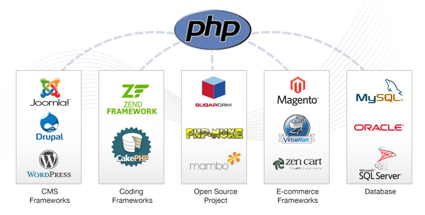

El diseño web responsivo (Responsive Web Design/RWD) es una filosofía de diseño web que incorpora una interfaz de usuario (UI) independiente del tipo de dispositivo con el que se navega, que tiene como objetivo desarrollar y ofrecer una experiencia web óptima en aparatos con diferentes tamaños y diferentes resoluciones: computadora de escritorio, portátil, tableta, teléfono inteligente, etc. Es una tecnología mediante la cual nuestros diseñadores web codifican las hojas de estilo de la página web de tal forma que su distribución se ajusta por “arte de magia” automáticamente para adaptarse con mayor comodidad al ancho del navegador en el que se está viendo la información.
El diseño web responsivo ha venido evolucionando en los últimos años para convertirse en una funcionalidad obligada para la entrega de contenido a los usuarios. Desde un navegador móvil en un iPhone hasta una televisión de alta definición, los sitios web responsivos son capaces de ajustar su aspecto basándose en las dimensiones de la pantalla. Ya no podemos diseñar únicamente para una pantalla de escritorio, considerando el número de dispositivos y diferentes tamaños de pantallas que están disponibles hoy en día; y los que vendrán en un futuro.
El objetivo con todos nuestros sitios web es que no dependan del dispositivo.
Diseño de Páginas Web

Nuestra firma se especializa en el diseño de páginas web para hacer negocios, creando sitios web a la medida y necesidades de las empresas. Nuestro objetivo es optimizar la comunicación entre compañías y sus mercados, impulsar las ventas y tener clientes más satisfechos.
Internet es una moderna herramienta para optimizar la comunicación con clientes y proveedores. Un sitio web puede colaborar en forma importante en la transformación del negocio hacia un esquema de operación comercial mucho más eficiente, un modelo de negocio orientado al cliente.
Diseño de Páginas Web
En Softweb no nos limitamos a crear simples catálogos electrónicos. Nuestra experiencia de casi una década en mercadotecnia en Internet y los más de veinte años en tecnologías de la información nos permiten ofrecer a nuestros clientes las mejores soluciones, aplicando las técnicas de diseño web más convenientes de acuerdo a los objetivos específicos de cada empresa.
Mantenimiento de Páginas Web
Considerando por un lado la dinámica propia de los negocios y, por otro, la constante evolución de las tecnologías web, resulta difícil imaginar que un sitio web pueda permanecer sin cambios durante largos períodos de tiempo. Si usted es un usuario asiduo de Internet, entenderá perfectamente de qué estamos hablando. Al igual que los negocios, los sitios web deben ser muy dinámicos y responder oportunamente a las necesidades de los clientes.
En Softweb podemos actualizar su sitio web con la periodicidad que sea necesaria, en forma diaria, semanal, mensual, bimestral, semestral o anualmente. Usted mismo establece la frecuencia de actualización. Además lo orientaremos sobre el sistema de mantenimiento más apropiado para el sitio web de su empresa
Mantenimiento de Páginas Web
Muchos empresarios y ejecutivos lo desconocen, pero en un proyecto de mercadotecnia por Internet el verdadero compromiso lo adquiere uno precisamente en el momento de publicar la primera versión de nuestro sitio web. Sus propios clientes le indicarán a usted los temas y frecuencia de las actualizaciones a su página web que en su momento sean necesarias.